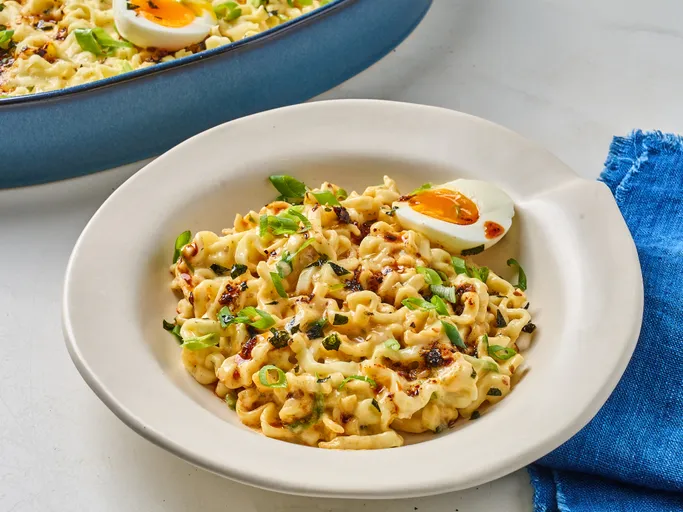

Home
Cheesy Buldak Ramen Casserole

Description
This cheesy Buldak ramen casserole tames the heat—a little—with the addition of creamy mozzarella and American cheese. It's a quick and easy bake.
Ingreditents
- 3 (4.5 ounce) packages very spicy Korean ramen, such as Buldak® Ramen, reserve seasoning packets, discard sauce packet
- 3 cups water
Steps
- Preheat the oven to 375 degrees F (190 degrees C)
- Combine uncooked ramen, 3 seasoning packets, and 3 cups water in an 8x10-inch casserole dish. Sprinkle evenly with half the mozzarella cheese; top with American cheese slices. Cover with foil.